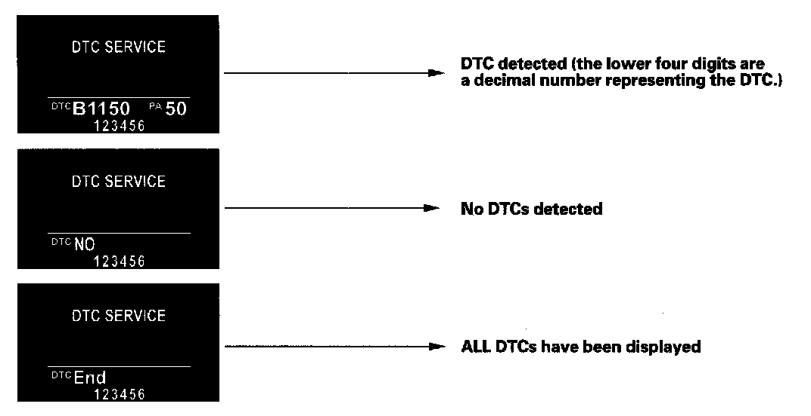
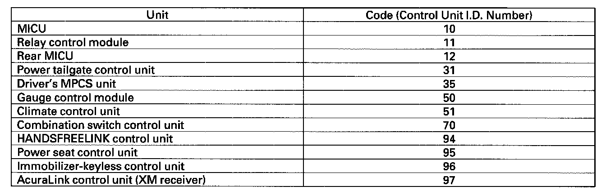
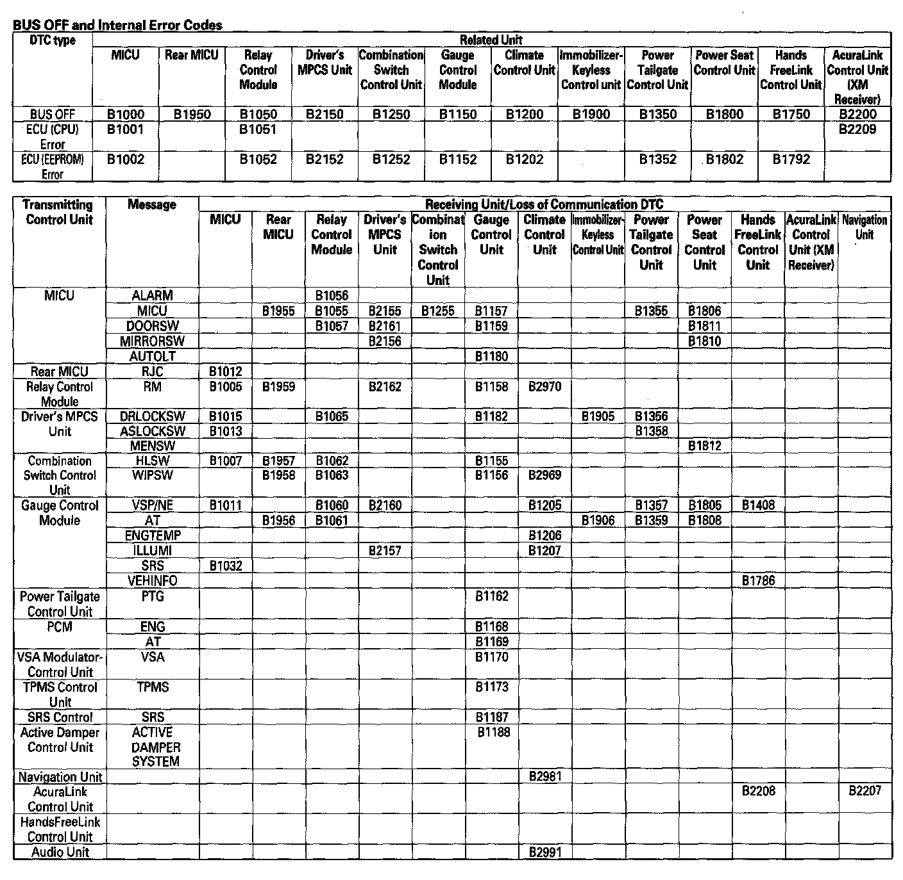

Reading and Clearing Diagnostic Trouble Codes
General Troubleshooting InformationTroubleshooting CAN Circuit Related Problems
NOTE: Check the powertrain control module (PCM) for DTCs and troubleshoot PCM or F-CAN loss of communication errors first.
Using the HDS (Preferred method)
1. Go to B-CAN System Diagnosis Test Mode A to check for "Connected units" and DTCs.
2. If no DTCs are retrieved, go to B-CAN System Diagnosis Test Mode C or D.
Without HDS (Use only if the HDS is unavailable)
1. Check for communication circuit problems using B-CAN System Diagnostic Test.
2. Check for DTCs.
3. Sort, and then troubleshoot the DTCs in this order:
1. Battery voltage DTCs
2. Internal error DTCs
3. Loss of communication DTCs (beginning with the lowest number first; for example, if B1008 and B1011 are retrieved, troubleshoot B1008 first). Refer to loss of communication cross reference chart.
4. Signal error DTCs
4. If no DTCs are retrieved, use B-CAN System Diagnostic Test Mode 2 to check all inputs related to failure.
How to display DTCs on the gauge control module
1. Set the multiplex in Test Mode 1.

2. While in Test Mode 1,the DTCs which have been detected and stored individually by various B-CAN units, will be shown one by one on the multi-information display on the gauge control module when the communication between the MICU and the gauge control module is normal. To scroll through the DTCs, press the select/reset button.

3. The unit that has stored the code can be identified by the number shown on the multi-information display (MID).
How to clear the DTC
While in DTC indication status, press and hold down the select/reset button for more than 10 seconds.

Loss of Communication DTC cross-reference chart
When an engine control unit (ECU) is unable to communicate with the other ECUs on the CAN circuit, the other control units will set loss of communication DTCs. Use this chart given to find the control unit that is not communicating.
1. Find the Transmitting Control Unit that is in the same row as all of the loss of communication DTCs retrieved.
2. Do the input test for the transmitting control unit.